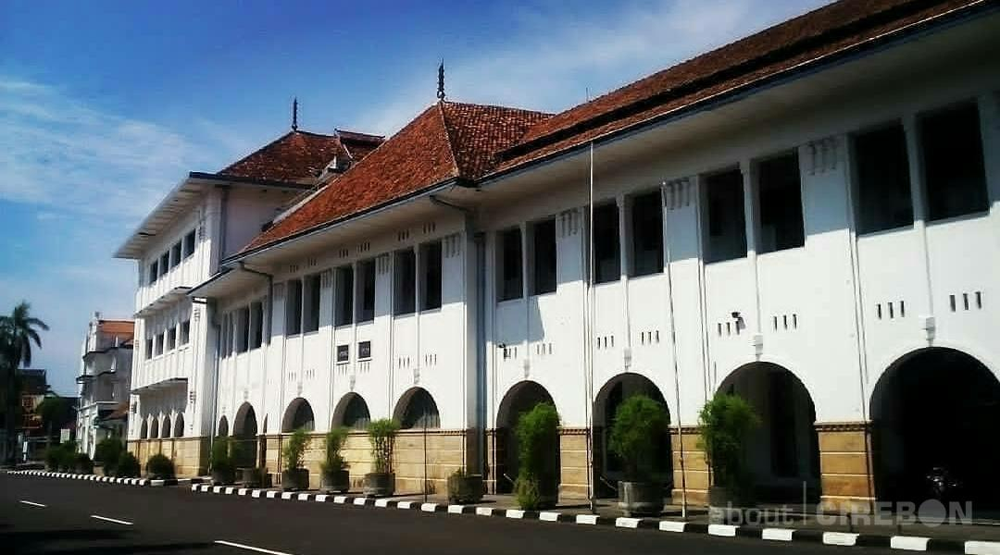
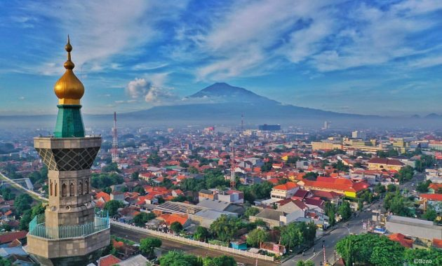
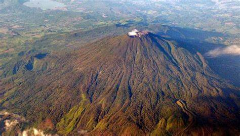

Sejarah

Cirebon adalah salah satu kota yang berada di provinsi Jawa Barat, Indonesia. Kota ini berada di pesisir Utara pulau Jawa atau yang dikenal dengan jalur pantura yang menghubungkan Jakarta-Cirebon-Semarang-Surabaya. Pada tahun 2021, jumlah penduduk kota Cirebon sebanyak 343.497 jiwa, dengan kepadatan 9.194 jiwa/km2.
Pada awalnya Cirebon berasal dari kata sarumban, Cirebon adalah sebuah dukuh kecil yang dibangun oleh Ki Gedeng Tapa. Lama-kelamaan Cirebon berkembang menjadi sebuah desa yang ramai yang kemudian diberi nama Caruban (carub dalam bahasa Jawa artinya bersatu padu). Diberi nama demikian karena di sana bercampur para pendatang dari beraneka bangsa di antaranya Jawa, Sunda, Tionghoa, dan unsur-unsur budaya bangsa Arab), agama, bahasa, dan adat istiadat. kemudian pelafalan kata caruban berubah lagi menjadi carbon dan kemudian cerbon.
Selain karena faktor penamaan tempat penyebutan kata cirebon juga dikarenakan sejak awal mata pencaharian sebagian besar masyarakat adalah nelayan, maka berkembanglah pekerjaan menangkap ikan dan rebon (udang kecil) di sepanjang pantai, serta pembuatan terasi, petis dan garam. Dari istilah air bekas pembuatan terasi atau yang dalam Bahasa Jawa Cirebon disebut (belendrang) yang terbuat dari sisa pengolahan udang rebon inilah berkembang sebutan cai-rebon (bahasa sunda: air rebon), yang kemudian menjadi cirebon.
Geografis

Kota Cirebon terletak pada 6°41′S 108°33′E pantai Utara Pulau Jawa, bagian timur Jawa Barat, memanjang dari barat ke timur 8 kilometer, Utara ke Selatan 11 kilometer dengan ketinggian dari permukaan laut 5 meter (termasuk dataran rendah). Kota Cirebon dapat ditempuh melalui jalan darat sejauh 130 km dari arah Kota Bandung dan 258 km dari arah Kota Jakarta.
Kota Cirebon terletak pada lokasi yang strategis dan menjadi simpul pergerakan transportasi antara Jawa Barat dan Jawa Tengah. Letaknya yang berada di wilayah pantai menjadikan Kota Cirebon memiliki wilayah dataran yang lebih luas dibandingkan dengan wilayah perbukitannya. Luas Kota Cirebon adalah 37,36 km² dengan dominasi penggunaan lahan untuk perumahan (32%) dan tanah pertanian (38%).[6]
Wilayah Kotamadya Cirebon Sebelah Utara dibatasi Sungai Kedung Pane, Sebelah Barat dibatasi Sungai Banjir Kanal, Kabupaten Cirebon, Sebelah Selatan dibatasi Sungai Kalijaga, Sebelah Timur dibatasi Laut Jawa.
Sebagian besar wilayah merupakan dataran rendah dengan ketinggian antara 0-2000 dpl, sementara kemiringan lereng antara 0-40 % di mana 0-3 % merupakan daerah berkarateristik kota, 3-25 % daerah transmisi dan 25-40 % merupakan pinggiran. Kota ini dilalui oleh beberapa sungai di antaranya Sungai Kedung Pane, Sungai Sukalila, Sungai Kesunean, dan Sungai Kalijaga.
Wisata
Cirebon Superblock adalah pusat perbelanjaan terbesar di Kota Cirebon, Jawa Barat saat ini dengan luas 7,2 ha. Superblock ini menerapkan sistem 4 in 1. Sistem ini adalah sistem pembangunan mall, hotel, perkantoran, dan ruko di dalam 1 area. Setiap bangunan atau blok didesain dengan gaya arsitektur yang modern dan masa kini. Proyek ini menjadikan suasana kota Cirebon lebih berkarakter dengan ciri-ciri khas yang unik dan tiada duanya. Cirebon Superblock dibangun dan dikelola oleh PT Karya Bersama Takarob, salah satu anggota Nirvana Development Group.
Gunung Ciremai

Gunung Ceremai (sering kali secara salah kaprah dinamakan "Ciremai") Latin: Gunung Ceremé) adalah gunung berapi kerucut yang secara administratif termasuk dalam wilayah dua kabupaten, yakni Kabupaten Kuningan dan Kabupaten Majalengka, Provinsi Jawa Barat. Posisi geografis puncaknya terletak pada 6° 53' 30" LS dan 108° 24' 00" BT, dengan ketinggian 3.078 m di atas permukaan laut. Gunung ini merupakan gunung tertinggi di Jawa Barat.
Gunung ini memiliki kawah ganda. Kawah barat yang beradius 400 m terpotong oleh kawah timur yang beradius 600 m. Pada ketinggian sekitar 2.900 m dpl di lereng selatan terdapat bekas titik letusan yang dinamakan Gowa Walet.
Kini G. Ceremai termasuk ke dalam kawasan Taman Nasional Gunung Ciremai (TNGC), yang memiliki luas total sekitar 15.000 hektare.
Nama gunung ini berasal dari kata cereme (Phyllanthus acidus, sejenis tumbuhan perdu berbuah kecil dengan rasa masam), namun sering kali disebut Ciremai, suatu gejala hiperkorek akibat banyaknya nama tempat di wilayah Pasundan yang menggunakan awalan 'ci-' untuk penamaan tempat.
Keraton Kasepuhan Cirebon
.jfif)
Keraton Kasepuhan adalah keraton yang terletak di kelurahan Kesepuhan, Lemahwungkuk, Cirebon. Makna di setiap sudut arsitektur keraton ini pun terkenal paling bersejarah. Halaman depan keraton ini dikelilingi tembok bata merah dan terdapat pendopo di dalamnya.[1]
Keraton Kasepuhan adalah bangunan yang dahulu bernama keraton Pakungwati[2] yang pernah menjadi pusat pemerintahan Kasultanan Cirebon.
Keraton ini memiliki museum yang cukup lengkap dan berisi benda pusaka dan lukisan koleksi kerajaan. Salah satu koleksi yaitu kereta Singa Barong yang merupakan kereta kencana Sunan Gunung Jati. Kereta tersebut saat ini tidak lagi dipergunakan dan hanya dikeluarkan pada tiap 1 Syawal untuk dimandikan.
Bagian dalam keraton ini terdiri dari bangunan utama yang berwarna putih. Di dalamnya terdapat ruang tamu, ruang tidur dan singgasana raja.